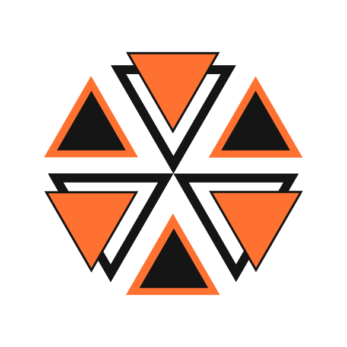

Project 001 - In development
Distributed Fault-Tolerant Robotic System
Project Ananta is being developed as a distributed robotic system that can detect controller failures, shift responsibilities between nodes, and continue operating safely.

Navikarana Labs is a place for independent technical work that can grow into open-source technology, products, or independent ventures.
Project 001 - In development
Distributed Fault-Tolerant Robotic System
Project Ananta is being developed as a distributed robotic system that can detect controller failures, shift responsibilities between nodes, and continue operating safely.